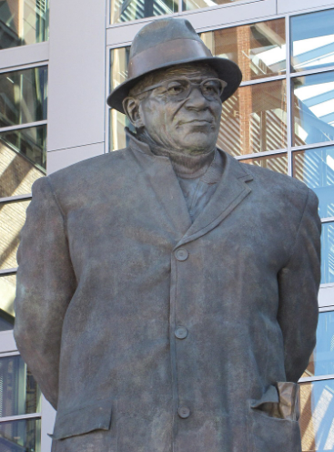

As you can see in the image above it shows the evolution of the NFL helmet. Just by looking at this it is a crazy to think about how people were hitting each other with only those little things on their heads and not a lot of padding as well. This evolution of the helemet is one of the crazier things I have seen as the invention of football has taken off.
Shoulder Pads:
The shoulder pads have had a very similar evolution as the helmet. I would say the helmet has had more of a evolution because the shoulder pads started as like nothing and there was not a lot of plastic and coverage. Then in the 80s and 90s the coverage on the shoulder pads expanded a lot and every position no matter what were using the should pads. Now adays people have different kinds of shoulder pads depending on the position you play. If you play on the offensive or defensive line you have bigger pads if you play wide reciever or running back you have smaller pads. It just all depends on the position you play.
Jerseys:
This is something that is not a whole lot different the Green Bay Packers G logo has been the logo sense the team started and it is incredible to think about that the logo is the exact same 100 years later.

Vince Lombardi
Who is he?
Vince Lombardi is the greatest football coach of all time. He played football as well and this is what made him fall in love with the game. When he took over as the packers head coach the packers were not very good at all in fact they only won one game in his first year
He ended up winning 5 NFL championships before the super bowl was created. He also ended up winning two super bowls with the packers and this was the first two ever played super bowls. The crazy thing about Lombardi is that he did everything he did with his full effort and everyone says when I read things about him is that he was just a great man and that people respected him meaning people listened to him whihc created him to be the best coach to ever do it.
Why is the super bowl trophy named after some random guy. Well it is not named after some random guy it is named after the head coach that won the first two super bowls. I talk about this man in the little snippet on the right as well. There has been a total of 58 super bowls played and every single one had a trophy that went with it named the lombardi trophy. This is a very important trophy in all of sports because of how iconic it is.